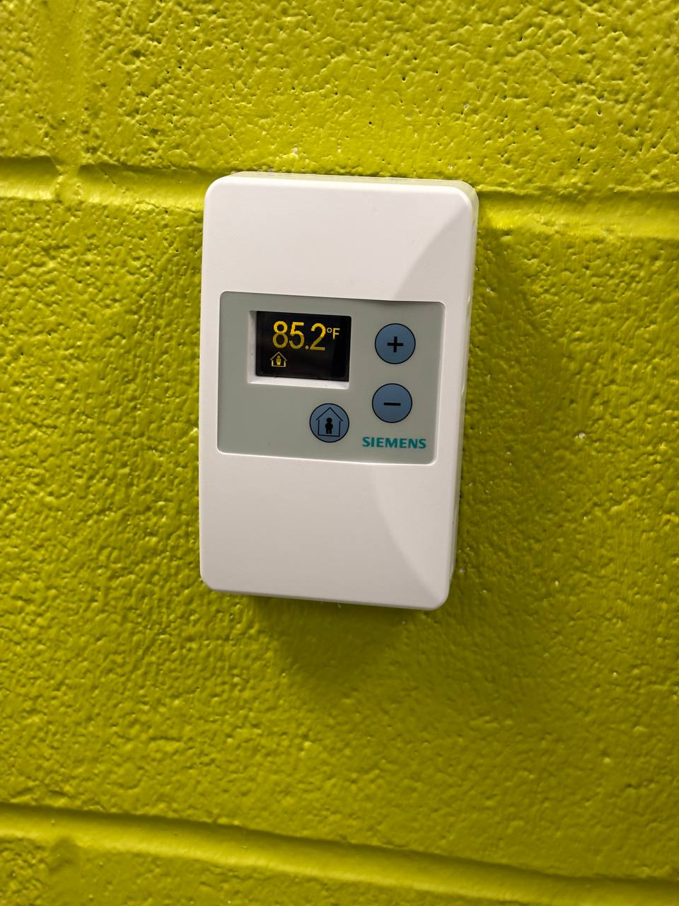
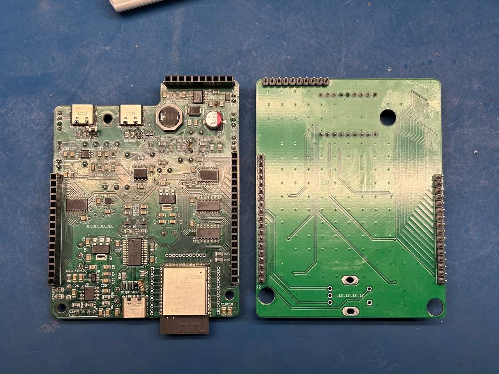
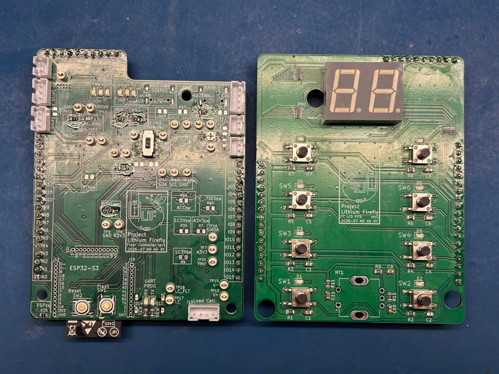
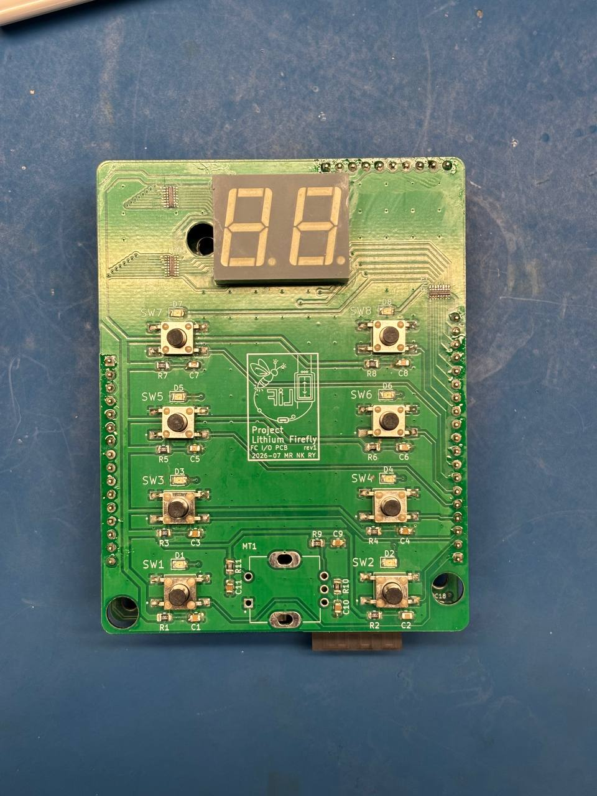
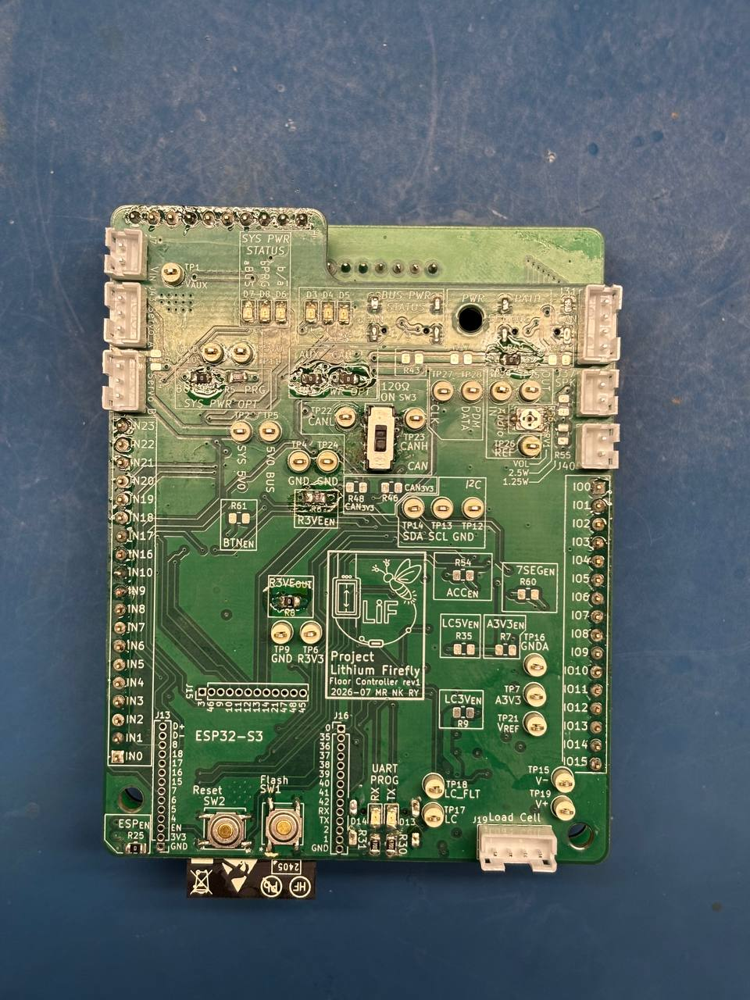

Final Soldering for Unit 1 PCBs
When I arrived to continue working on the project, the laboratory thermostat showed 29.67 °C.





I2C Testing
During I2C testing, the SDA line measured 0 V while the SCL line measured 2.76 V. The same behaviour occurred when the PCB was powered through either the programming USB or CAN power input.
The 3.3 V bus still measured 3.35 V, and the ESP32-S3 continued to function correctly.
I identified a short circuit between SDA and ground. The resistance between SDA and SCL measured 5.38 kΩ. I suspected that the short was caused by poor soldering beneath the LGA accelerometer IC; however, without access to X-ray inspection equipment, I could not confirm the cause.